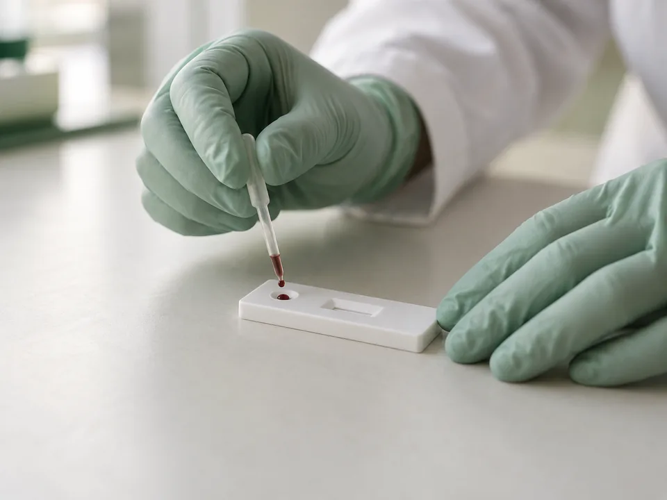
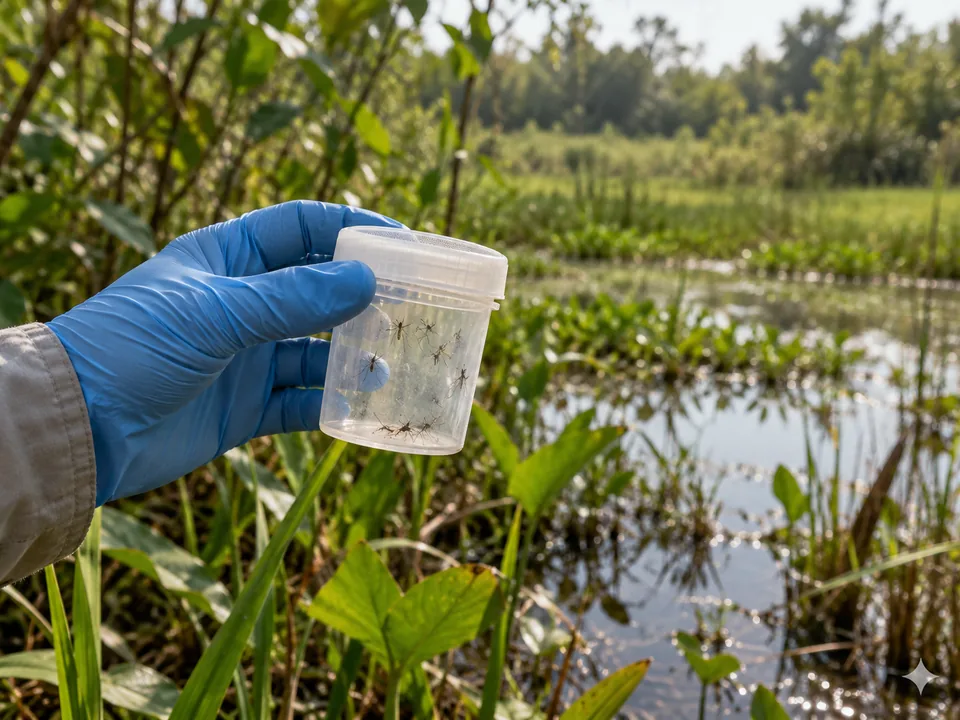

01
Malaria detection
Diagnostic gaps, low-density infections, and parasite gene deletions that can undermine rapid tests.

Kayode Lab · James Madison University
From pathogen detection to patterns of transmission.
Discover our researchOur perspective
Our research brings these perspectives together. We study malaria and other vector-borne infections across laboratory and field settings, asking how they spread, change, and sometimes escape detection. The goal is evidence that helps surveillance reflect what is happening on the ground.
Research
Diagnostic gaps, low-density infections, and parasite gene deletions that can undermine rapid tests.

Parasite diversity and markers of antimalarial drug resistance, studied with molecular and sequencing tools.
Approaches that look beyond one pathogen to investigate malaria, arboviruses, and unresolved fever.
How environments, movement, and exposure shape patterns of vector-borne disease.

Lab members
Kayode Lab is led by Dr. Tolulope A. Kayode.
Principal Investigator
Assistant Professor of Biology
James Madison University
News
Dr. Tolulope A. Kayode has launched Kayode Lab in JMU’s Department of Biology. The lab brings together epidemiology, diagnostics, and genomics to study vector-borne disease transmission.
Selected publications
Opportunities
JMU students interested in infectious disease, molecular biology, genomics, bioinformatics, or global health are encouraged to get in touch. Tell us about the questions that interest you, the skills you hope to develop, and what you would like to learn through research.
Researchers, clinicians, and public health teams working on vector-borne disease are welcome to discuss collaborations in field studies, diagnostics, and genomic surveillance.